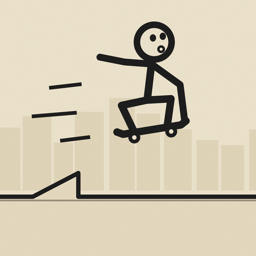

Stickskate
An endless stickman skateboarding game for iPhone and iPad.
Support
Questions, bugs or ideas? Email jithinpankaj@gmail.com and we'll get back to you.
Privacy policy
Last updated 8 October 2026
Stickskate does not collect any personal data.
- Your progress — best distance, coins, badges and custom tracks — is stored only on your device.
- There are no accounts, ads, analytics or tracking.
- If you sign in to Game Center, your best distance is sent to Apple's Game Center leaderboard. That is handled by Apple under Apple's privacy policy.
- When you share a custom track, the track (its name, pieces and your time) is turned into a link that you choose where to send. Nothing is uploaded by us.
If this policy ever changes, the new version will be posted on this page.